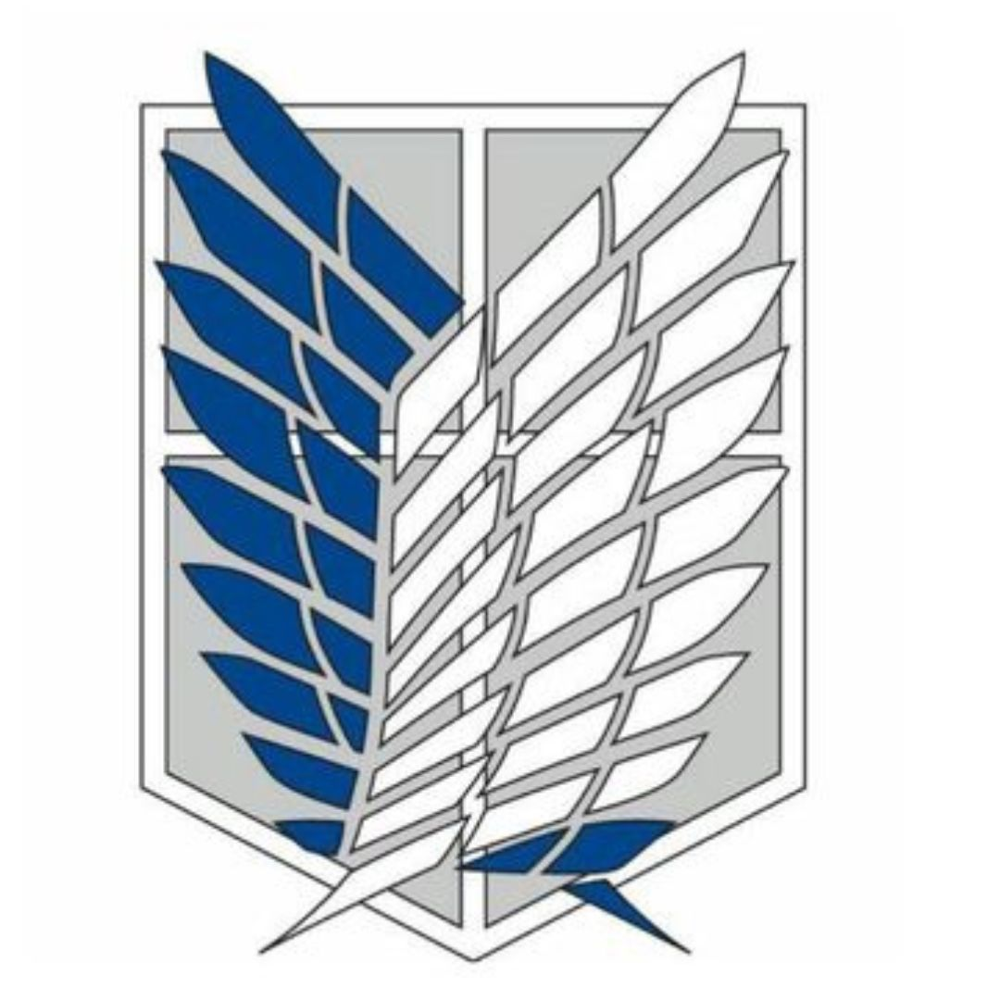
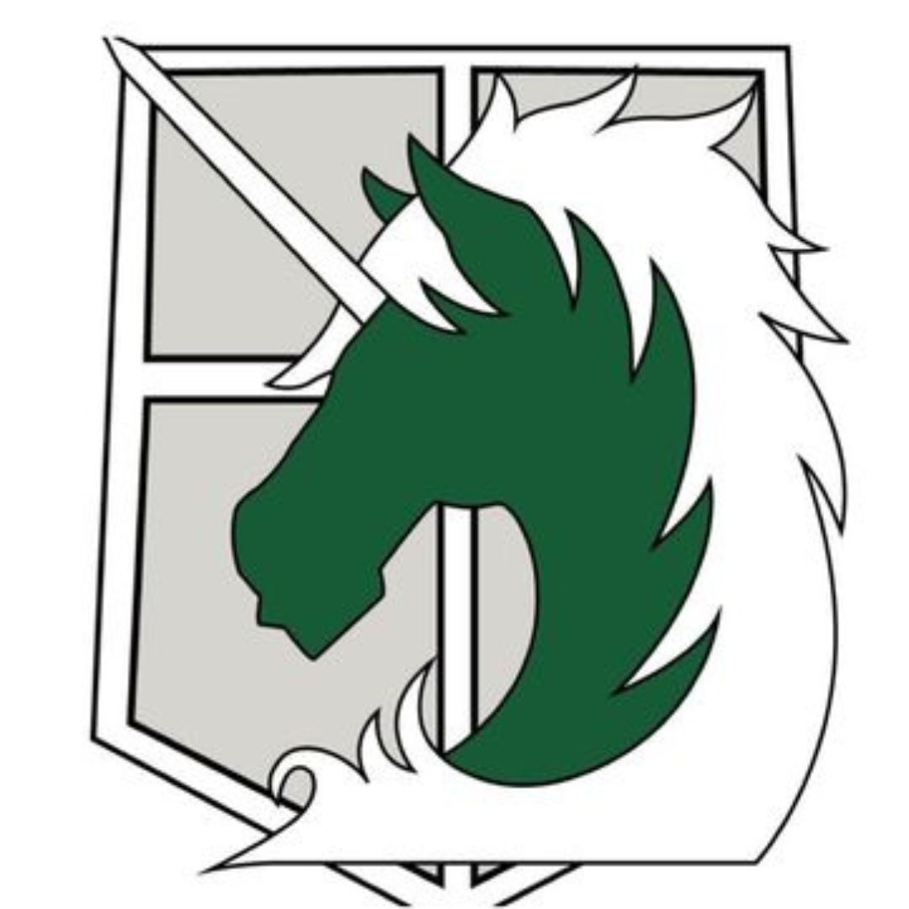

Attack On Titan Wiki
Forças Militares
Cada força com funções e características distintas

Divisão de Reconhecimento
Tropa de ExploraçãoSão os soldados mais ousados, encarregados de explorar além das muralhas para descobrir mais sobre os Titãs e lutar diretamente contra eles.
Leia mais

Brigada de Polícia Militar
Brigada MilitarResponsável pela proteção interna, especialmente dentro da Muralha Sina, cuidando da segurança da elite e mantendo a ordem pública.
Leia mais
Guarnição das Muralhas
Tropa EstacionáriaEles defendem as muralhas e a população que vive dentro delas. Sua função principal é manter a segurança e as defesas das muralhas.
Leia mais
Unidade de Treinamento
Training CorpsA Unidade de Treinamento é responsável por preparar os novos recrutas para se juntarem a uma das divisões militares.
Leia mais